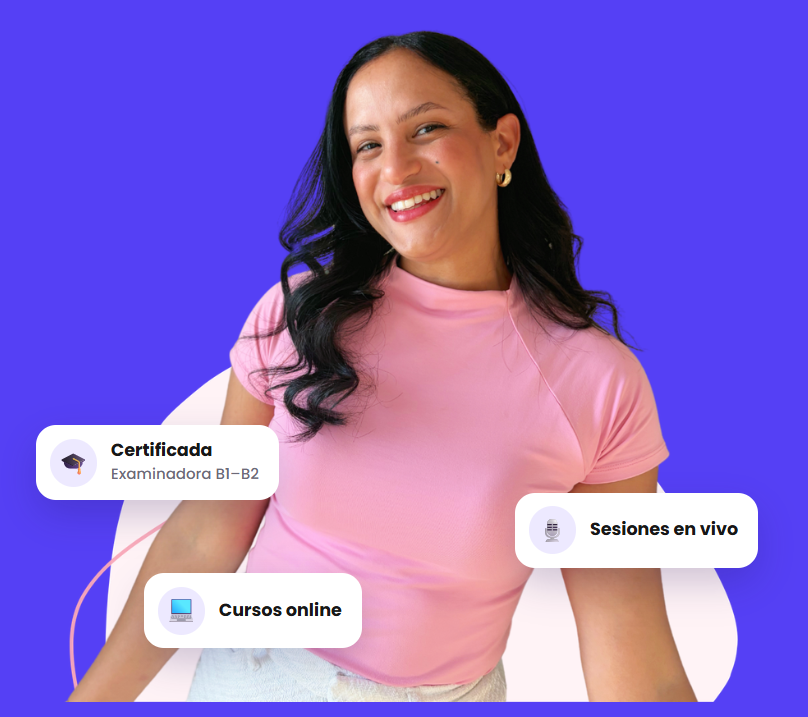

Alemán · Recurso recomendado
Aprende alemán con Laura
Laura enseña alemán a hispanohablantes con conversaciones e historias cotidianas. En su web presenta cursos con clases en vivo y explica su método para aprender un alemán útil en situaciones reales.
Para hispanohablantesConversación y vida realClases en vivo
Visitar la web de Laura
Consulta allí niveles, fechas y condiciones actuales.